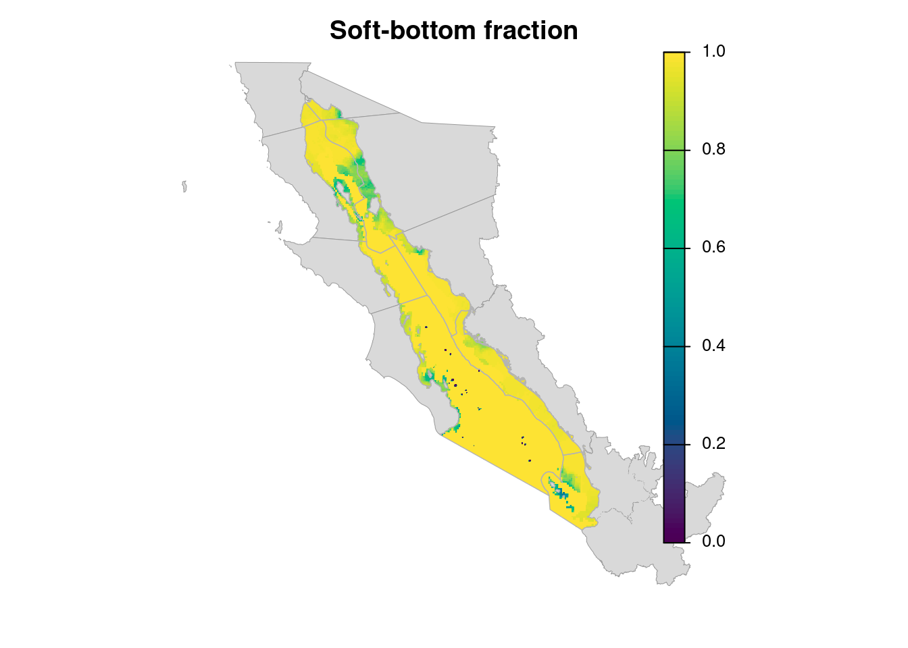
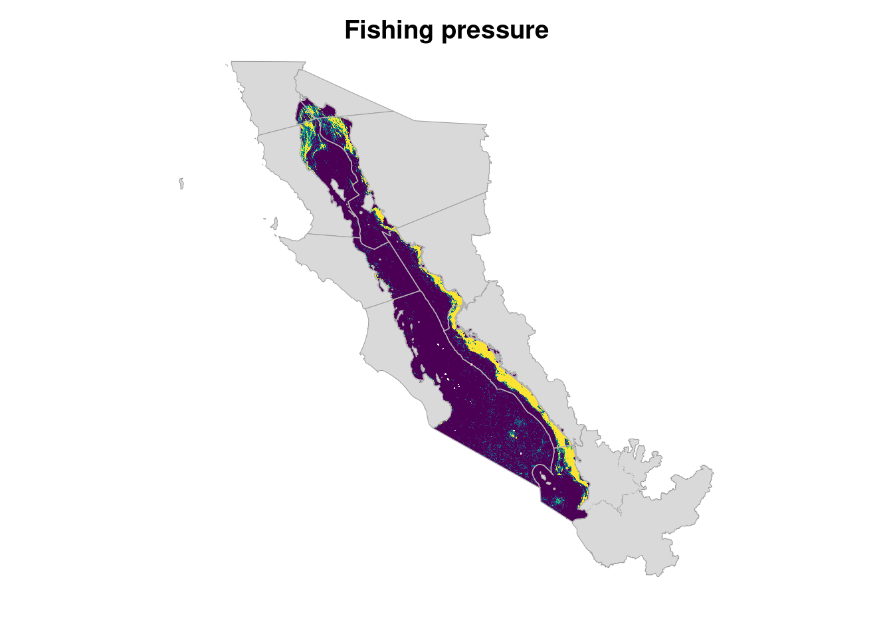
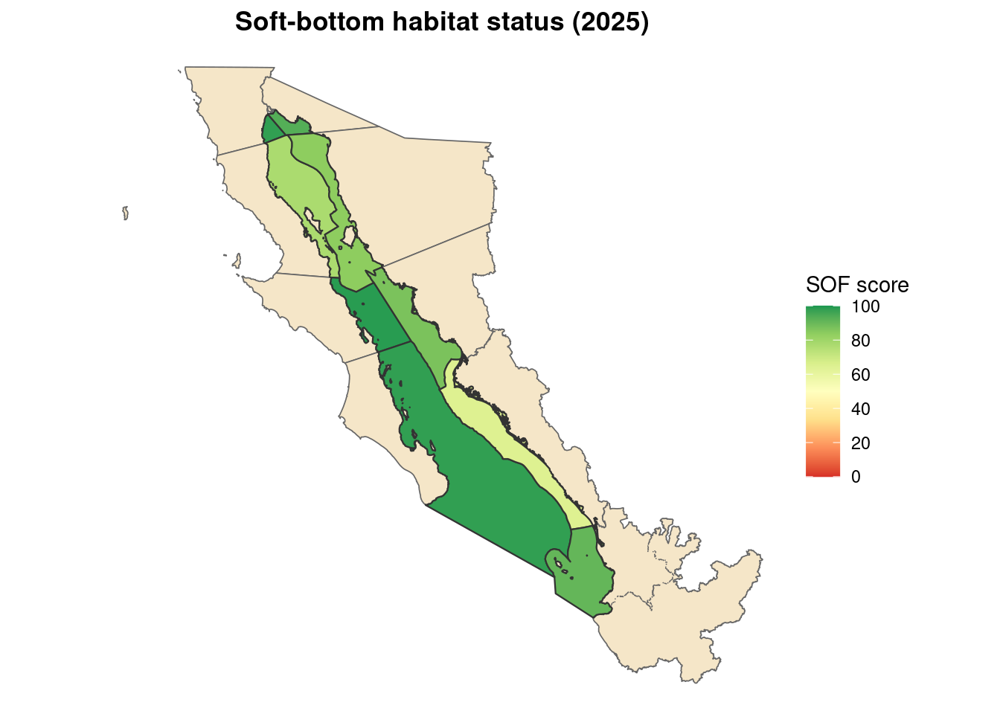
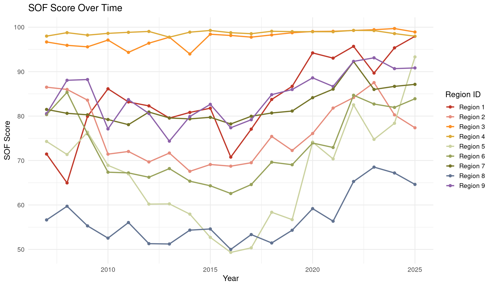
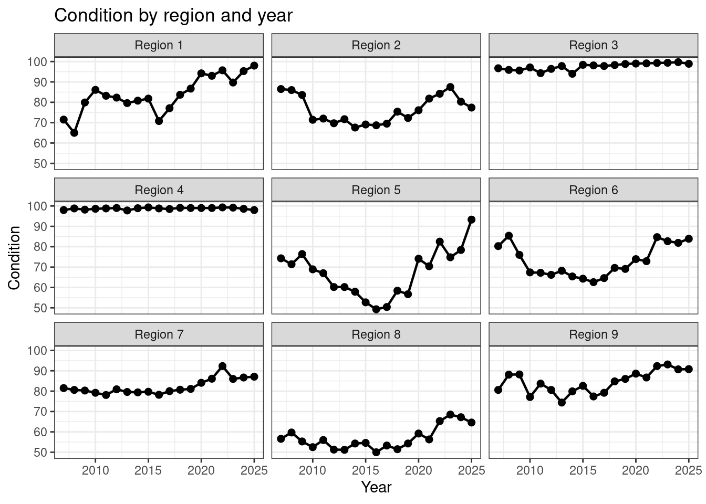
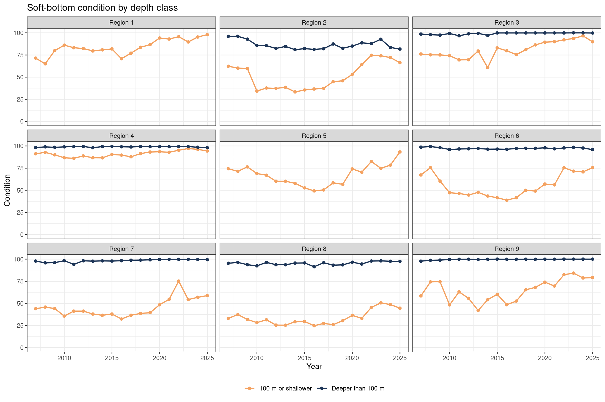
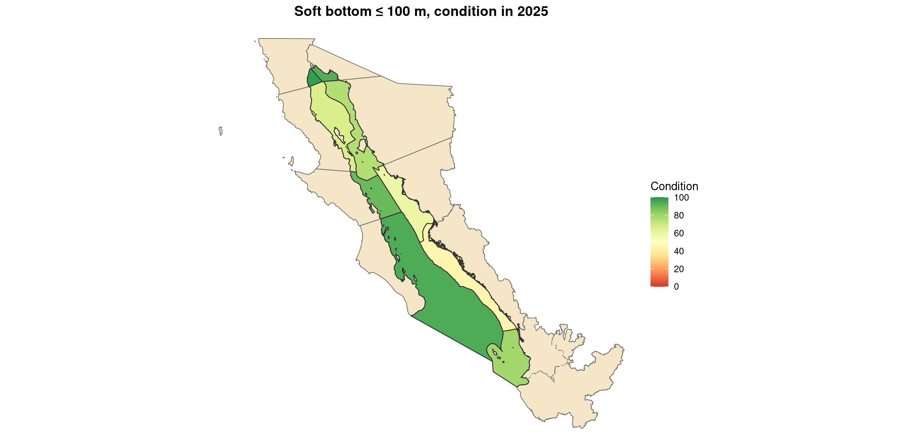
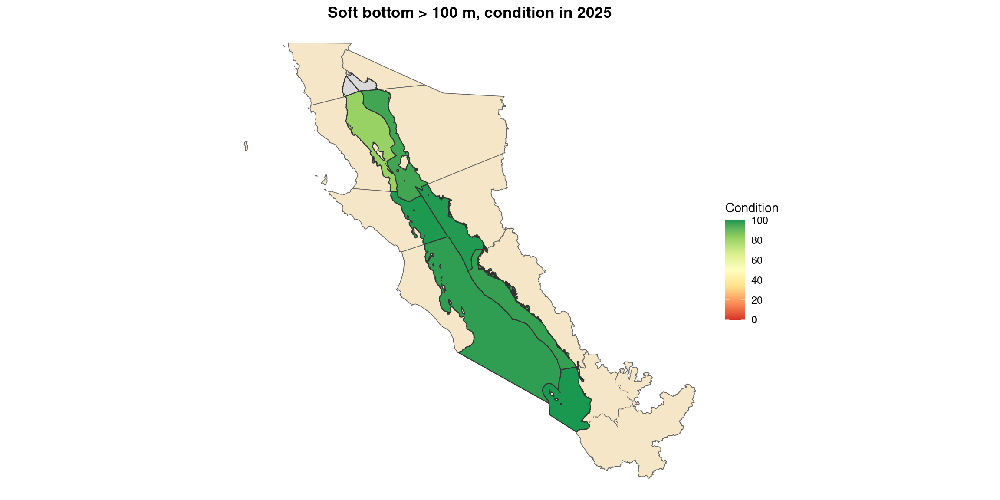

Code
# Load in Libraries
library(sf)
library(dplyr)
library(here)
library(terra)
library(tidyr)
library(ggplot2)
library(knitr)
library(kableExtra)
library(tmap)
library(readr)The sections through Pressure score one soft-bottom habitat. The last section repeats that score for soft bottom of 100 m or less and for soft bottom deeper than 100 m.
# Load in Libraries
library(sf)
library(dplyr)
library(here)
library(terra)
library(tidyr)
library(ggplot2)
library(knitr)
library(kableExtra)
library(tmap)
library(readr)# Target CRS for all vector data (matches OHI regions + fishing rasters)
target_crs <- "EPSG:6372" # Mexico ITRF2008 / LCC
# Master analysis grid = fishing effort (already EPSG:6372, 1 km)
years <- 2007:2025
fishing_rasters <- rast(
paste0(
"/home/shares/ohi/OHI_GOC/goal_prep/pressures/vessels/benthic_destructive_fishing/destructive_fishing_hours_",
years,
"_1km.tif"
)
)
nlyr(fishing_rasters)[1] 19# Read OHI regions and transform to Mexico ITRF2008 / LCC before any analysis
ohi_regions <- st_read(here("spatial", "ohi_regions", "goc_ohi_rgns.shp")) |>
st_make_valid() |>
st_transform(target_crs)Reading layer `goc_ohi_rgns' from data source
`/home/frazier/ohi_goc_prep/spatial/ohi_regions/goc_ohi_rgns.shp'
using driver `ESRI Shapefile'
Simple feature collection with 18 features and 5 fields
Geometry type: MULTIPOLYGON
Dimension: XY
Bounding box: xmin: 911292 ymin: 770594.3 xmax: 2550361 ymax: 2349615
Projected CRS: Mexico ITRF2008 / LCCohi_land <- ohi_regions |> dplyr::filter(location == "land")
ohi_marine <- ohi_regions |> dplyr::filter(location == "marine")# Read habitat shapefiles and transform to EPSG:6372 before rasterizing
rocky_reef <- st_read(here("/home/shares/ohi/OHI_GOC/_raw_data/Hem_data/goc_habitat_data/Arrecife rocoso/Arrecife rocoso.shp")) |>
st_make_valid() |>
st_transform(target_crs)Reading layer `Arrecife rocoso' from data source
`/home/shares/ohi/OHI_GOC/_raw_data/Hem_data/goc_habitat_data/Arrecife rocoso/Arrecife rocoso.shp'
using driver `ESRI Shapefile'
Simple feature collection with 4317 features and 3 fields
Geometry type: POLYGON
Dimension: XY
Bounding box: xmin: 122585.9 ymin: 2274841 xmax: 1109257 ymax: 3534794
Projected CRS: WGS 84 / UTM zone 12Nseamounts <- st_read(here("/home/shares/ohi/OHI_GOC/_raw_data/Hem_data/goc_habitat_data/seamount/seamount_merge.shp")) |>
st_make_valid() |>
st_transform(target_crs)Reading layer `seamount_merge' from data source
`/home/shares/ohi/OHI_GOC/_raw_data/Hem_data/goc_habitat_data/seamount/seamount_merge.shp'
using driver `ESRI Shapefile'
Simple feature collection with 52 features and 10 fields
Geometry type: MULTIPOLYGON
Dimension: XY
Bounding box: xmin: 1083733 ymin: 2527774 xmax: 1463499 ymax: 3171542
Projected CRS: Lambert_Conformal_Conic# Clip seamounts to OHI regions (same CRS)
seamounts <- st_intersection(seamounts, ohi_regions)# Find proportion of polygon that is rocky reef (areas in EPSG:6372 meters)
rocky_reef <- rocky_reef |>
mutate(
rocky_km2 = rocky_ha / 100, # Convert rocky_ha from hectares to km2
polygon_km2 = as.numeric(st_area(geometry)) / 1e6, # Find area of polygons
prop_rocky_reef = rocky_km2 / polygon_km2 # Find proportion of polygon that is rocky reef
)# 100 m template nested under the fishing 1 km grid (same CRS, origin, extent)
# so aggregate(fact = 10) lands exactly on the fishing cells
template_100m <- disagg(rast(fishing_rasters[[1]]), fact = 10)# Rasterize rocky reef polygon proportions
rocky_reef_prop_r <- rasterize(vect(rocky_reef), template_100m, field = "prop_rocky_reef", background = 0)# Check to see if the min and max are between 0-1
max(rocky_reef_prop_r)class : SpatRaster
size : 14800, 12500, 1 (nrow, ncol, nlyr)
resolution : 100, 100 (x, y)
extent : 1050000, 2300000, 9e+05, 2380000 (xmin, xmax, ymin, ymax)
coord. ref. : Mexico ITRF2008 / LCC (EPSG:6372)
source(s) : memory
varname : destructive_fishing_hours_2007_1km
name : max
min value : 0.0000000
max value : 0.6724738 # Rasterize the vector seamounts data
seamounts_r <- rasterize(vect(seamounts), template_100m, field = 1, background = 0)# Check if values are between 0-1
max(seamounts_r)class : SpatRaster
size : 14800, 12500, 1 (nrow, ncol, nlyr)
resolution : 100, 100 (x, y)
extent : 1050000, 2300000, 9e+05, 2380000 (xmin, xmax, ymin, ymax)
coord. ref. : Mexico ITRF2008 / LCC (EPSG:6372)
source(s) : memory
varname : destructive_fishing_hours_2007_1km
name : max
min value : 0
max value : 1 # Both layers already rasterized onto template_100m — confirm alignment
compareGeom(rocky_reef_prop_r, template_100m, stopOnError = TRUE)[1] TRUEcompareGeom(seamounts_r, template_100m, stopOnError = TRUE)[1] TRUE# Make raster where 0 = no hard‑bottom and 1+ = hard‑bottom present
hard_bottom_100m <- rocky_reef_prop_r +
seamounts_r# Check if values are between 0-1
max(hard_bottom_100m)class : SpatRaster
size : 14800, 12500, 1 (nrow, ncol, nlyr)
resolution : 100, 100 (x, y)
extent : 1050000, 2300000, 9e+05, 2380000 (xmin, xmax, ymin, ymax)
coord. ref. : Mexico ITRF2008 / LCC (EPSG:6372)
source(s) : memory
varname : destructive_fishing_hours_2007_1km
name : max
min value : 0.000000
max value : 1.534536 # Cap values at 1 to make a proportion
hard_bottom_100m[hard_bottom_100m > 1] <- 1# Groups every 10×10 block of 100‑m cells into one 1‑km cell, and computes the mean of values inside that block
hard_bottom_fraction <- aggregate(hard_bottom_100m, fact = 10, fun = "mean")
|---------|---------|---------|---------|
=========================================
# flips the fraction so more soft bottom = 1
soft_bottom_fraction <- 1 - hard_bottom_fraction# Check if values are between 0-1
max(soft_bottom_fraction)class : SpatRaster
size : 1480, 1250, 1 (nrow, ncol, nlyr)
resolution : 1000, 1000 (x, y)
extent : 1050000, 2300000, 9e+05, 2380000 (xmin, xmax, ymin, ymax)
coord. ref. : Mexico ITRF2008 / LCC (EPSG:6372)
source(s) : memory
name : max
min value : 0
max value : 1 # Mask to the OHI marine region extent
marine_mask <- rasterize(
vect(ohi_marine),
soft_bottom_fraction,
field = 1,
background = NA
)
soft_bottom_fraction <- mask(soft_bottom_fraction, marine_mask)Make plot of soft-bottom area
# Land first (gray), then soft-bottom raster, then marine borders
plot(vect(ohi_land), col = "gray85", border = "gray60", lwd = 0.5,
main = "Soft-bottom fraction", axes = FALSE, box=FALSE)
plot(
soft_bottom_fraction,
add = TRUE,
col = hcl.colors(100, "viridis"),
range = c(0, 1),
legend = TRUE,
axes = FALSE,
box = FALSE
)
plot(vect(ohi_marine), add = TRUE, border = "gray70", lwd = 0.7, col = NA, box=FALSE, axes=FALSE)
soft_res <- res(soft_bottom_fraction)
print(paste("Resolution (m):", soft_res))[1] "Resolution (m): 1000" "Resolution (m): 1000"max(soft_bottom_fraction, na.rm = TRUE)class : SpatRaster
size : 1480, 1250, 1 (nrow, ncol, nlyr)
resolution : 1000, 1000 (x, y)
extent : 1050000, 2300000, 9e+05, 2380000 (xmin, xmax, ymin, ymax)
coord. ref. : Mexico ITRF2008 / LCC (EPSG:6372)
source(s) : memory
name : max
min value : 0
max value : 1 Fishing rasters were loaded above (master grid in EPSG:6372). Soft-bottom habitat was rasterized onto that same nested grid after transforming all shapefiles to Mexico ITRF2008 / LCC.
Average head rope length: 0.030 km Average vessel trawl speed: 3.7 km/h
# Convert fishing hours to area km² of disturbance for each raster cell
# (already on fishing grid; no spatial transform)
disturbance_raster_km2 <- fishing_rasters * 3.7 * 0.030
compareGeom(disturbance_raster_km2, fishing_rasters[[1]], stopOnError = TRUE)[1] TRUEcompareGeom(soft_bottom_fraction, fishing_rasters[[1]], stopOnError = TRUE)[1] TRUEdisturbance_raster_km2 = the area covered by trawlers
# now get pressure
prop_disturbed <- disturbance_raster_km2/soft_bottom_fraction
# Cap pressure at 1 - assumes that going over the same spot multiple times introduces minimal extra impact.
prop_disturbed[prop_disturbed > 1] <- 1
prop_disturbed[is.infinite(prop_disturbed)] <- 0
## save for rhodoliths
# Intermediate: soft-bottom fishing pressure (0–1) for rhodolith use
int_dir <- here("_habitats/HAB_soft_bottom/int")
# One multi-layer GeoTIFF (layers = years 2007–2025)
names(prop_disturbed) <- paste0("prop_disturbed_", years)
writeRaster(
prop_disturbed,
filename = file.path(int_dir, "prop_disturbed_soft_bottom_1km.tif"),
overwrite = TRUE
)
area_soft_bottom_disturbed = prop_disturbed * soft_bottom_fractionMake plot of destructive fishing pressure.
# Land first (gray), then soft-bottom raster, then marine borders
plot(vect(ohi_land), col = "gray85", border = "gray60", lwd = 0.5,
main = "Fishing pressure", axes = FALSE, box=FALSE)
plot(
prop_disturbed,
add = TRUE,
col = hcl.colors(100, "viridis"),
range = c(0, 1),
legend = FALSE,
axes = FALSE,
box = FALSE
)
plot(vect(ohi_marine), add = TRUE, border = "gray70", lwd = 0.7, col = NA, box=FALSE, axes=FALSE)
soft_bottom_fraction = soft bottom area (fraction ≈ km² on 1 km cells)
# Rasterize OHI region IDs onto the fishing grid (vectors already in EPSG:6372)
template <- rasterize(
vect(ohi_marine),
fishing_rasters[[1]],
field = "id",
background = NA
)
compareGeom(template, fishing_rasters[[1]], stopOnError = TRUE)[1] TRUE# Extract region_ids
region_ids <- as.vector(values(template))
# Number of cells in the fishing-aligned region raster
n_cells <- ncell(template)
# Number of years in the disturbance stack
n_years <- nlyr(area_soft_bottom_disturbed)
# Build a tibble where each row = one pixel × one year
df_regions <- tibble(
region_id = rep(region_ids, times = n_years), # Region ID for each pixel, repeated for every year
year = rep(years, each = n_cells), # Year column: each year repeated for all n_cells pixels
disturbed_area = as.vector(values(area_soft_bottom_disturbed)), # Disturbed soft-bottom area (km²) for each pixel × year
soft_bottom_area = rep(as.vector(values(soft_bottom_fraction)), times = n_years) # Soft-bottom area (km²) for each pixel — same every year
)
# Remove rows with missing region IDs or invalid numeric values
df_regions <- df_regions |>
filter(!is.na(region_id), !is.nan(disturbed_area), !is.nan(soft_bottom_area))
df_regions# A tibble: 4,806,285 × 4
region_id year disturbed_area soft_bottom_area
<int> <int> <dbl> <dbl>
1 5 2007 0 0.978
2 5 2007 0 0.978
3 5 2007 0 0.978
4 5 2007 0 0.978
5 5 2007 0 0.978
6 5 2007 0 0.978
7 5 2007 0 0.978
8 5 2007 0 0.978
9 5 2007 0 0.978
10 5 2007 0 0.977
# ℹ 4,806,275 more rows# Calculate Pressure and SOF score for each region for each year
pressure_df <- df_regions |>
group_by(region_id, year) |>
summarise(
disturbed_sum = sum(disturbed_area, na.rm = TRUE),
soft_bottom_sum = sum(soft_bottom_area, na.rm = TRUE),
Pressure = disturbed_sum / soft_bottom_sum,
SOF_score = 1 - Pressure,
Pressure = Pressure * 100,
SOF_score = SOF_score * 100,
.groups = "drop"
)
pressure_df# A tibble: 171 × 6
region_id year disturbed_sum soft_bottom_sum Pressure SOF_score
<int> <int> <dbl> <dbl> <dbl> <dbl>
1 1 2007 674. 2361. 28.5 71.5
2 1 2008 827. 2361. 35.0 65.0
3 1 2009 474. 2361. 20.1 79.9
4 1 2010 327. 2361. 13.9 86.1
5 1 2011 397. 2361. 16.8 83.2
6 1 2012 418. 2361. 17.7 82.3
7 1 2013 483. 2361. 20.4 79.6
8 1 2014 453. 2361. 19.2 80.8
9 1 2015 430. 2361. 18.2 81.8
10 1 2016 690. 2361. 29.2 70.8
# ℹ 161 more rows# SOF score per region per year.
# Condition (SOF_score) is stored to 1 decimal. The 0–100 pressure is the complement of that rounded condition.
write_csv(
pressure_df |>
mutate(
SOF_score = round(SOF_score, 1),
Pressure = round(100 - SOF_score, 1)
),
here("_habitats/HAB_soft_bottom/SOF_outputs/sof_region_scores_per_year.csv"))
# pressure_df <- read_csv(here::here("_habitats/HAB_soft_bottom/SOF_outputs/sof_region_scores_per_year.csv"))# Select a single year
year_to_show <- 2025 # <-- change this to any year you want
# Filter for selected year
pressure_year <- pressure_df |>
filter(year == year_to_show) |>
arrange(region_id)
# Make a kable table
pressure_year |>
mutate(
SOF_score = round(SOF_score, 1),
Pressure = round(100 - SOF_score, 1)
) |>
select(region_id, Pressure, SOF_score) |>
kable(
digits = 1,
col.names = c("Region ID", "Pressure", "SOF_score"),
align = c("c", "r", "r")
) |>
kable_styling(
bootstrap_options = c("striped", "bordered", "hover"),
full_width = FALSE
) |>
add_header_above(
setNames(3, paste0("Soft-bottom Pressure & SOF — Year ", year_to_show))
)| Region ID | Pressure | SOF_score |
|---|---|---|
| 1 | 2.0 | 98.0 |
| 2 | 22.6 | 77.4 |
| 3 | 1.1 | 98.9 |
| 4 | 2.0 | 98.0 |
| 5 | 6.7 | 93.3 |
| 6 | 16.1 | 83.9 |
| 7 | 12.9 | 87.1 |
| 8 | 35.4 | 64.6 |
| 9 | 9.2 | 90.8 |
ohi_sof <- ohi_regions |>
left_join(
pressure_year |> transmute(id = as.integer(region_id), SOF_score),
by = "id"
)
ohi_land <- ohi_sof |> filter(location == "land")
ohi_marine <- ohi_sof |> filter(location == "marine")
ggplot() +
geom_sf(data = ohi_land, fill = "#f5e6c8", color = "gray40", linewidth = 0.3) +
geom_sf(data = ohi_marine, aes(fill = SOF_score), color = "gray20", linewidth = 0.4) +
scale_fill_distiller(
palette = "RdYlGn",
direction = 1,
name = "SOF score",
limits = c(0, 100),
breaks = seq(0, 100, by = 20)
) +
labs(title = "Soft-bottom habitat status (2025)") +
theme_void() +
theme(
legend.position = "right",
plot.title = element_text(face = "bold", hjust = 0.5)
)
# Define region colors
rgn_colors <- c(
"Region_1" = "#C03729",
"Region_2" = "#E68C7C",
"Region_3" = "#FC8F24",
"Region_4" = "#dcaa38",
"Region_5" = "#cbd2a0",
"Region_6" = "#98a25a",
"Region_7" = "#747428",
"Region_8" = "#627391",
"Region_9" = "#8d61a9"
)
# Clean region names in pressure_df to match color names
pressure_df <- pressure_df |>
mutate(
region_clean = paste0("Region_", region_id), # numeric → Region_#
region_clean = gsub("_", " ", region_clean) # Region_1 → Region 1
)
# Clean color names to match cleaned labels ("Region 1", etc.)
rgn_colors_clean <- setNames(
rgn_colors,
gsub("_", " ", names(rgn_colors)) # Region_1 → Region 1
)
# SOF time series plot with custom colors
ggplot(
pressure_df,
aes(
x = year,
y = SOF_score,
group = region_clean,
color = region_clean
)
) +
geom_point(size = 2) +
geom_line(linewidth = 1) +
scale_color_manual(values = rgn_colors_clean) +
labs(
title = "SOF Score Over Time",
x = "Year",
y = "SOF Score",
color = "Region ID"
) +
theme_minimal(base_size = 14)
# Calculate condition score
condition_df <- pressure_df |>
select(region_id, year, condition = SOF_score) |> # keep needed columns
mutate(
condition = pmin(round(condition, 1), 100) # cap at 100, store to 1 decimal
)
condition_df# A tibble: 171 × 3
region_id year condition
<int> <int> <dbl>
1 1 2007 71.5
2 1 2008 65
3 1 2009 79.9
4 1 2010 86.1
5 1 2011 83.2
6 1 2012 82.3
7 1 2013 79.6
8 1 2014 80.8
9 1 2015 81.8
10 1 2016 70.8
# ℹ 161 more rowswrite_csv(condition_df, here::here("_habitats/HAB_soft_bottom/SOF_outputs/sof_status.csv"))
condition_df <- condition_df |>
mutate(region_id = factor(region_id, levels = 1:9))
ggplot(condition_df, aes(x = year, y = condition)) +
geom_line(linewidth = 0.8) +
geom_point(size = 2) +
facet_wrap(~ region_id, ncol = 3, labeller = labeller(region_id = function(x) paste("Region", x))) +
scale_x_continuous(breaks = pretty(condition_df$year)) +
labs(
x = "Year",
y = "Condition",
title = "Condition by region and year"
) +
theme_bw()
# Trend Calculation: lm for most recent 5 years of data
year_end <- max(condition_df$year, na.rm = TRUE)
year_start <- year_end - 4
calc_trends <- function(d) {
ys <- min(d$year)
ye <- max(d$year)
cs <- d$condition[d$year == ys][1]
fit_lin <- lm(condition ~ year, data = d)
fit_log <- lm(log(condition) ~ year, data = d)
slope_lin <- unname(coef(fit_lin)["year"])
slope_log <- unname(coef(fit_log)["year"])
tibble(
year = ye,
year_start = ys,
year_end = ye,
condition_start = round(cs, 1),
trend_pct_linear = (slope_lin / cs) * 100, # slope / start * 100
trend_pct_cagr = (exp(slope_log) - 1) * 100 # slope from log model
)
}
trend_df <- condition_df |>
filter(year >= year_start, year <= year_end) |>
group_by(region_id) |>
group_modify(~ calc_trends(.x)) |>
ungroup()
trend_df# A tibble: 9 × 7
region_id year year_start year_end condition_start trend_pct_linear
<fct> <int> <int> <int> <dbl> <dbl>
1 1 2025 2021 2025 93 1.03e+ 0
2 2 2025 2021 2025 81.8 -1.55e+ 0
3 3 2025 2021 2025 99.1 -7.78e-15
4 4 2025 2021 2025 99 -2.73e- 1
5 5 2025 2021 2025 70.4 5.92e+ 0
6 6 2025 2021 2025 72.9 2.63e+ 0
7 7 2025 2021 2025 86.1 -4.18e- 1
8 8 2025 2021 2025 56.3 3.29e+ 0
9 9 2025 2021 2025 86.7 7.61e- 1
# ℹ 1 more variable: trend_pct_cagr <dbl>write_csv(trend_df, here::here("_habitats/HAB_soft_bottom/SOF_outputs/sof_trend.csv"))pressure_df_score <- pressure_df %>%
mutate(pressure = round(Pressure / 100, 2)) %>%
select(region_id, year, pressure)
write_csv(pressure_df_score, here::here("_habitats/HAB_soft_bottom/SOF_outputs/sof_pressure.csv"))The files above are the combined habitat. This section does not replace them, and it does not change the disturbed-proportion raster saved for rhodoliths.
The same swept-area score is calculated twice. Soft bottom of 100 m or less uses mask_depth_le_100m_1km.tif. Soft bottom deeper than 100 m uses mask_depth_gt_100m_1km.tif. Those masks already partition the marine grid: a cell with any bathymetry sample of 100 m or less is shallow, and a coastal marine cell with no in-water sample is shallow as well. Every other marine cell is deep.
Within a class, the cell calculation is unchanged. Disturbance in km² is fishing hours times 3.7 km/h times a 0.030 km headrope. The cell ratio of disturbance to soft-bottom area is capped at 1. The regional pressure is the sum of that capped disturbed area divided by the sum of soft-bottom area. Condition is 100 times 1 minus that pressure. Trend is the 2021–2025 change in condition, linear and as a compound rate.
A cell’s hours stay with that cell. Regions 1 and 5 have no cells deeper than 100 m, so they are left out of the deep files. Because the two classes do not overlap, adding their disturbed area and their soft-bottom area should recover the combined score above. Saved condition is rounded to 1 decimal. Saved pressure, on the 0–1 scale, is rounded to 2 decimals. The area columns stay unrounded.
# Depth masks are 1 inside the class, 0 in other marine cells, empty outside.
shelf_mask <- rast(here(
"_habitats", "HAB_soft_bottom", "int", "mask_depth_le_100m_1km.tif"
))
deep_mask <- rast(here(
"_habitats", "HAB_soft_bottom", "int", "mask_depth_gt_100m_1km.tif"
))
compareGeom(shelf_mask, soft_bottom_fraction, stopOnError = TRUE)[1] TRUEcompareGeom(deep_mask, soft_bottom_fraction, stopOnError = TRUE)[1] TRUEcompareGeom(shelf_mask, template, stopOnError = TRUE)[1] TRUE# Same marine cells as the combined score: a region id and a soft-bottom value.
score_cells <- !is.na(values(template)[, 1]) & !is.na(values(soft_bottom_fraction)[, 1])
shelf_vals <- values(shelf_mask)[, 1]
deep_vals <- values(deep_mask)[, 1]
n_unassigned <- sum(score_cells & (is.na(shelf_vals) | (shelf_vals == 0 & deep_vals == 0)), na.rm = TRUE)
n_overlap <- sum(score_cells & shelf_vals == 1 & deep_vals == 1, na.rm = TRUE)
cat("Combined-score cells in neither mask:", n_unassigned, "\n")Combined-score cells in neither mask: 0 cat("Combined-score cells in both masks:", n_overlap, "\n")Combined-score cells in both masks: 0 stopifnot(n_unassigned == 0, n_overlap == 0)# Regional score for one depth class.
# Rows are written only where that class has soft-bottom area.
score_depth_class <- function(mask) {
soft_class <- soft_bottom_fraction * mask
disturbance_class <- disturbance_raster_km2 * mask
prop_class <- disturbance_class / soft_class
prop_class[prop_class > 1] <- 1
prop_class[is.infinite(prop_class)] <- 0
disturbed_class <- prop_class * soft_class
n_cells <- ncell(template)
n_years <- nlyr(disturbed_class)
class_df <- tibble(
region_id = rep(as.integer(values(template)[, 1]), times = n_years),
year = rep(years, each = n_cells),
in_class = rep(values(mask)[, 1], times = n_years),
disturbed_area = as.vector(values(disturbed_class)),
soft_bottom_area = rep(as.vector(values(soft_class)), times = n_years)
) |>
filter(in_class == 1, !is.na(region_id)) |>
filter(!is.nan(disturbed_area), !is.nan(soft_bottom_area))
class_df |>
group_by(region_id, year) |>
summarise(
disturbed_sum = sum(disturbed_area, na.rm = TRUE),
soft_bottom_sum = sum(soft_bottom_area, na.rm = TRUE),
.groups = "drop"
) |>
filter(soft_bottom_sum > 0) |>
mutate(
pressure = round(disturbed_sum / soft_bottom_sum, 2),
condition = pmin(round((1 - disturbed_sum / soft_bottom_sum) * 100, 1), 100)
)
}
# Same trend definition as the combined habitat.
# The log fit needs a positive condition in every year of the window.
calc_trends_depth <- function(d) {
ys <- min(d$year)
ye <- max(d$year)
cs <- d$condition[d$year == ys][1]
fit_lin <- lm(condition ~ year, data = d)
slope_lin <- unname(coef(fit_lin)["year"])
trend_log <- NA_real_
if (all(d$condition > 0)) {
fit_log <- lm(log(condition) ~ year, data = d)
slope_log <- unname(coef(fit_log)["year"])
trend_log <- (exp(slope_log) - 1) * 100
}
tibble(
year = ye,
year_start = ys,
year_end = ye,
condition_start = round(cs, 1),
trend_pct_linear = (slope_lin / cs) * 100,
trend_pct_cagr = trend_log
)
}
write_depth_outputs <- function(scores, file_suffix) {
out_dir <- here("_habitats", "HAB_soft_bottom", "SOF_outputs")
write_csv(
scores |>
transmute(
region_id,
year,
disturbed_sum,
soft_bottom_sum,
Pressure = round(100 - condition, 1),
SOF_score = condition
),
file.path(out_dir, paste0("sof_region_scores_per_year_", file_suffix, ".csv"))
)
write_csv(
scores |> select(region_id, year, condition),
file.path(out_dir, paste0("sof_status_", file_suffix, ".csv"))
)
write_csv(
scores |> select(region_id, year, pressure),
file.path(out_dir, paste0("sof_pressure_", file_suffix, ".csv"))
)
year_end <- max(scores$year)
trend <- scores |>
filter(year >= year_end - 4, year <= year_end) |>
group_by(region_id) |>
group_modify(~ calc_trends_depth(.x)) |>
ungroup()
write_csv(trend, file.path(out_dir, paste0("sof_trend_", file_suffix, ".csv")))
trend
}
shelf_scores <- score_depth_class(shelf_mask)
deep_scores <- score_depth_class(deep_mask)
shelf_trend <- write_depth_outputs(shelf_scores, "le_100m")
deep_trend <- write_depth_outputs(deep_scores, "gt_100m")
cat(
"Deep habitat has no cells for region(s):",
paste(setdiff(1:9, unique(deep_scores$region_id)), collapse = ", "),
"\n"
)Deep habitat has no cells for region(s): 1, 5 The two class totals should add back to the combined score. A difference here would mean a cell was dropped or counted twice.
split_sums <- bind_rows(shelf_scores, deep_scores) |>
group_by(region_id, year) |>
summarise(
disturbed_split = sum(disturbed_sum),
soft_split = sum(soft_bottom_sum),
.groups = "drop"
)
depth_split_check <- pressure_df |>
transmute(
region_id = as.integer(region_id),
year = as.integer(year),
disturbed_original = disturbed_sum,
soft_original = soft_bottom_sum,
pressure_original = Pressure / 100
) |>
left_join(split_sums, by = c("region_id", "year")) |>
mutate(
pressure_split = disturbed_split / soft_split,
abs_soft_diff = abs(soft_split - soft_original),
abs_disturbed_diff = abs(disturbed_split - disturbed_original),
abs_pressure_diff = abs(pressure_split - pressure_original)
)
cat("Max |soft-bottom difference|, km²:", max(depth_split_check$abs_soft_diff), "\n")Max |soft-bottom difference|, km²: 3.637979e-12 cat("Max |disturbed-area difference|, km²:", max(depth_split_check$abs_disturbed_diff), "\n")Max |disturbed-area difference|, km²: 1.818989e-12 cat("Max |pressure difference|:", max(depth_split_check$abs_pressure_diff), "\n")Max |pressure difference|: 1.110223e-16 stopifnot(max(depth_split_check$abs_soft_diff) < 1e-3)
stopifnot(max(depth_split_check$abs_pressure_diff) < 1e-5)# Soft-bottom area is the denominator of the pressure score. It does not change by year.
area_by_class <- full_join(
shelf_scores |>
filter(year == max(year)) |>
select(region_id, shelf_soft_km2 = soft_bottom_sum),
deep_scores |>
filter(year == max(year)) |>
select(region_id, deep_soft_km2 = soft_bottom_sum),
by = "region_id"
) |>
arrange(region_id)
area_by_class |>
kable(
digits = 1,
col.names = c("Region", "≤ 100 m soft bottom, km²", "> 100 m soft bottom, km²"),
caption = "Soft-bottom area in each depth class. Empty cells are regions with no habitat in that class."
) |>
kable_styling(bootstrap_options = c("striped", "bordered"), full_width = FALSE)| Region | ≤ 100 m soft bottom, km² | > 100 m soft bottom, km² |
|---|---|---|
| 1 | 2361.5 | NA |
| 2 | 7129.2 | 18235.3 |
| 3 | 1409.4 | 14890.1 |
| 4 | 3314.4 | 100001.6 |
| 5 | 3151.7 | NA |
| 6 | 13314.8 | 9402.7 |
| 7 | 6035.8 | 13884.3 |
| 8 | 17463.0 | 10634.5 |
| 9 | 10145.8 | 13068.8 |
year_to_show_depth <- max(shelf_scores$year)
scores_2025 <- full_join(
shelf_scores |>
filter(year == year_to_show_depth) |>
select(region_id, shelf_pressure = pressure, shelf_condition = condition, shelf_disturbed = disturbed_sum),
deep_scores |>
filter(year == year_to_show_depth) |>
select(region_id, deep_pressure = pressure, deep_condition = condition, deep_disturbed = disturbed_sum),
by = "region_id"
) |>
arrange(region_id)
scores_2025 |>
kable(
digits = c(0, 2, 1, 1, 2, 1, 1),
col.names = c(
"Region",
"≤ 100 m pressure",
"≤ 100 m condition",
"≤ 100 m disturbed, km²",
"> 100 m pressure",
"> 100 m condition",
"> 100 m disturbed, km²"
),
caption = paste("Depth-class scores in", year_to_show_depth, ". Pressure is the share of soft-bottom area disturbed.")
) |>
kable_styling(bootstrap_options = c("striped", "bordered"), full_width = FALSE)| Region | ≤ 100 m pressure | ≤ 100 m condition | ≤ 100 m disturbed, km² | > 100 m pressure | > 100 m condition | > 100 m disturbed, km² |
|---|---|---|---|---|---|---|
| 1 | 0.02 | 98.0 | 48.4 | NA | NA | NA |
| 2 | 0.34 | 66.3 | 2399.1 | 0.18 | 81.7 | 3340.0 |
| 3 | 0.10 | 89.9 | 141.8 | 0.00 | 99.8 | 35.0 |
| 4 | 0.06 | 94.3 | 187.5 | 0.02 | 98.1 | 1904.3 |
| 5 | 0.07 | 93.3 | 210.8 | NA | NA | NA |
| 6 | 0.25 | 75.5 | 3267.4 | 0.04 | 95.9 | 390.1 |
| 7 | 0.41 | 58.8 | 2484.8 | 0.01 | 99.4 | 77.5 |
| 8 | 0.55 | 44.6 | 9673.2 | 0.03 | 97.5 | 266.0 |
| 9 | 0.21 | 79.1 | 2122.4 | 0.00 | 100.0 | 5.1 |
depth_colors <- c(
"100 m or shallower" = "#f4a261",
"Deeper than 100 m" = "#1d3557"
)
condition_by_depth <- bind_rows(
shelf_scores |> mutate(depth_class = "100 m or shallower"),
deep_scores |> mutate(depth_class = "Deeper than 100 m")
) |>
mutate(
depth_class = factor(depth_class, levels = names(depth_colors)),
region_id = factor(region_id, levels = 1:9)
)
ggplot(condition_by_depth, aes(x = year, y = condition, color = depth_class)) +
geom_line(linewidth = 0.8) +
geom_point(size = 1.6) +
facet_wrap(~ region_id, ncol = 3, labeller = labeller(region_id = function(x) paste("Region", x))) +
scale_color_manual(values = depth_colors, name = NULL) +
scale_y_continuous(limits = c(0, 100)) +
labs(
title = "Soft-bottom condition by depth class",
x = "Year",
y = "Condition"
) +
theme_bw() +
theme(legend.position = "bottom")
map_depth_status <- function(scores, title) {
ohi_map <- ohi_regions |>
left_join(
scores |>
filter(year == max(scores$year)) |>
transmute(id = as.integer(region_id), condition),
by = "id"
)
ggplot() +
geom_sf(data = dplyr::filter(ohi_map, location == "land"), fill = "#f5e6c8", color = "gray40", linewidth = 0.3) +
geom_sf(data = dplyr::filter(ohi_map, location == "marine"), aes(fill = condition), color = "gray20", linewidth = 0.4) +
scale_fill_distiller(
palette = "RdYlGn",
direction = 1,
name = "Condition",
limits = c(0, 100),
breaks = seq(0, 100, by = 20),
na.value = "grey85"
) +
labs(title = title) +
theme_void() +
theme(plot.title = element_text(face = "bold", hjust = 0.5))
}
map_depth_status(shelf_scores, "Soft bottom ≤ 100 m, condition in 2025")
map_depth_status(deep_scores, "Soft bottom > 100 m, condition in 2025")
shelf_trend |>
kable(
digits = 2,
caption = "Trend in soft-bottom condition, 100 m or shallower, 2021–2025. trend_pct_linear is the annual slope divided by the 2021 condition, in percent. trend_pct_cagr is the compound rate from the log fit."
) |>
kable_styling(bootstrap_options = c("striped", "bordered"), full_width = FALSE)| region_id | year | year_start | year_end | condition_start | trend_pct_linear | trend_pct_cagr |
|---|---|---|---|---|---|---|
| 1 | 2025 | 2021 | 2025 | 93.0 | 1.03 | 1.01 |
| 2 | 2025 | 2021 | 2025 | 64.2 | 0.25 | 0.29 |
| 3 | 2025 | 2021 | 2025 | 90.0 | 0.48 | 0.46 |
| 4 | 2025 | 2021 | 2025 | 92.9 | 0.41 | 0.40 |
| 5 | 2025 | 2021 | 2025 | 70.4 | 5.92 | 5.26 |
| 6 | 2025 | 2021 | 2025 | 56.1 | 6.10 | 5.45 |
| 7 | 2025 | 2021 | 2025 | 54.6 | -1.81 | -1.30 |
| 8 | 2025 | 2021 | 2025 | 33.1 | 7.92 | 6.87 |
| 9 | 2025 | 2021 | 2025 | 69.6 | 2.20 | 2.12 |
deep_trend |>
kable(
digits = 2,
caption = "Trend in soft-bottom condition, deeper than 100 m, 2021–2025. Regions 1 and 5 are absent because that class has no cells there."
) |>
kable_styling(bootstrap_options = c("striped", "bordered"), full_width = FALSE)| region_id | year | year_start | year_end | condition_start | trend_pct_linear | trend_pct_cagr |
|---|---|---|---|---|---|---|
| 2 | 2025 | 2021 | 2025 | 88.7 | -2.07 | -2.13 |
| 3 | 2025 | 2021 | 2025 | 99.9 | -0.01 | -0.01 |
| 4 | 2025 | 2021 | 2025 | 99.2 | -0.30 | -0.30 |
| 6 | 2025 | 2021 | 2025 | 96.8 | -0.20 | -0.20 |
| 7 | 2025 | 2021 | 2025 | 99.7 | -0.07 | -0.07 |
| 8 | 2025 | 2021 | 2025 | 94.5 | 0.61 | 0.61 |
| 9 | 2025 | 2021 | 2025 | 99.9 | 0.02 | 0.02 |